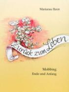
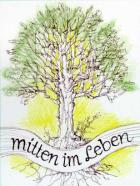

|
||
|

 |
||
|
AnschriftDr. Marianne Baun LebenslaufNach Abitur in Pirmasens Pädagogikstudium in Kaiserslautern und Landau. Zusatzstudium für Sonderpädagogik und Diplom in Mainz und Worms. Promotion in Frankfurt mit einer Arbeit zur "Kommunikationsförderung bei Geistigbehinderten" (1981 veröffentlicht). Erschienen sind auch "Hilfen zur Sprachförderung bei Lernbehinderten" (Marhold Verlag Berlin), Aufsätze und Vorträge u.a.m. Zuletzt autobiographische Geschichten, wie "Zurück zum Leben" und "Mitten im Leben" (Arbogast Verlag Otterbach). Gleichzeitig Erzählungen und Aphorismen wie "Wege zum Glück", "Alles hat seine Zeit", "Gelingendes Leben", "Carpe Diem - Nutze den Tag" und "Das Leben genießen". AnthologienKonfettiküsse, Kurzgeschichten, DeKi e.V. Verlag 2003 Konzerte2019 13.Dezember, Kirchheimbolanden2018 7.Dezember, Kirchheimbolanden2017 8.Dezember, Kirchheimbolanden2016 9.Dezember, Kirchheimbolanden2015 11.Dezember, Kirchheimbolanden2014 12.Dezember, Kirchheimbolanden2013 13.Dezember, Kirchheimbolanden2012 14.Dezember, Kirchheimbolanden2011 15.Dezember, Dannenfels2010 10.Dezember, Kirchheimbolanden2009 10.Dezember, Dannenfels2008 18.Dezember, DannenfelsKonzerte 1997 - 2007 Belletristische Werke
Zurück zum Leben
Mitten im Leben
Wege zum Glück
Alles hat seine Zeit
Gelingendes Leben
Carpe Diem - Nutze den Tag
Das Leben genießen LesungenDonnerstag, 7. Mai 2020, 14 UhrKirchengemeinde "In der Alten Welt"
Freitag, 13. Dezember 2019, 16 Uhr
Mittwoch, 4. Dezember 2019, 15 Uhr
Dienstag, 22. Oktober 2019, 15 Uhr
Mittwoch, 16. Oktober 2019, 14:30 Uhr
Mittwoch, 29. Mai 2019, 19:30 Uhr
Donnerstag, 2. Mai 2019, 15 Uhr
Mittwoch, 17. April 2019, 10:30 Uhr
Mittwoch, 10. April 2019, 15 Uhr
Mittwoch, 23. Januar 2019, 14:30 Uhr
Mittwoch, 19. Dezember 2018, 14:30 Uhr
Freitag, 14. Dezember 2018, 15 Uhr
Freitag, 7. Dezember 2018, 16 Uhr
Sonntag, 2. Dezember 2018, 15 Uhr
Donnerstag, 22. November 2018, 14:30 Uhr
Montag, 22. Oktober 2018, 15 Uhr
Mittwoch, 23. Mai 2018, 14:30 Uhr
Donnerstag, 17. Mai 2018, 15 Uhr
Donnerstag, 26. April 2018, 14 Uhr
Mittwoch, 4. April 2018, 14:30 Uhr
Freitag, 16. März 2018, 15 Uhr
Freitag, 8. Dezember 2017, 16 Uhr
Mittwoch, 6. Dezember 2017, 15 Uhr
Mittwoch, 8. November 2017, 14:30 Uhr
Donnerstag, 2. November 2017, 14:30 Uhr
Mittwoch, 25. Oktober 2017, 15 Uhr
Donnerstag, 12. Oktober 2017, 14:30 Uhr
Mittwoch, 11. Oktober 2017, 14:30 Uhr
Donnerstag, 30. März 2017, 15 Uhr
Mittwoch, 25. Januar 2017, 14:30 Uhr
Donnerstag, 15. Dezember 2016, 15 Uhr
Freitag, 9. Dezember 2016, 16 Uhr
Mittwoch, 26. Oktober 2016, 15 Uhr
Mittwoch, 19. Oktober 2016, 15 Uhr
Mittwoch, 12. Oktober 2016, 15 Uhr
Freitag, 3. Juni 2016, 15:30 Uhr
Mittwoch, 13. April 2016, 15 Uhr
Donnerstag, 3. März 2016, 15 Uhr
Freitag, 18. Dezember 2015, 15 Uhr
Freitag, 11. Dezember 2015, 16 Uhr
Mittwoch, 2. Dezember 2015, 14:30 Uhr
Mittwoch, 25. November 2015, 15 Uhr
Mittwoch, 11. November 2015, 14:30 Uhr
Mittwoch, 7. Oktober 2015, 14:30 Uhr
Dienstag, 6. Oktober 2015, 9 Uhr
Dienstag, 22. September 2015, 15 Uhr
Dienstag, 23. Juni 2015, 15 Uhr
Samstag, 16. Mai 2015, 15 Uhr
Mittwoch, 13. Mai 2015, 15 Uhr
Freitag, 20. März 2015, 15 Uhr
Donnerstag, 22. Januar 2015, 19 Uhr
Freitag, 19. Dezember 2014, 15 Uhr
Mittwoch, 17. Dezember 2014, 15 Uhr
Mittwoch, 10. Dezember 2014, 15 Uhr
Mittwoch, 3. Dezember 2014, 9 Uhr
Donnerstag, 5. Juni 2014, 15:30 Uhr
Dienstag, 15. April 2014, 15 Uhr
Donnerstag, 27. März 2014, 14 Uhr
Freitag, 21. März 2014, 15 Uhr
Mittwoch, 19. März 2014, 15 Uhr
Dienstag, 14. Januar 2014, 14:30 Uhr
Mittwoch, 20. November 2013, 10:30 Uhr
Mittwoch, 11. September 2013, 15:00 Uhr
Donnerstag, 13. Juni 2013, 15 Uhr
Donnerstag, 6. Juni 2013, 14:30 Uhr
Mittwoch, 10. April 2013, 15:00 Uhr
Mittwoch, 20. März 2013, 15:00 Uhr
Freitag, 1. März 2013, 15:00 Uhr
Montag, 18. Februar 2013, 19:00 Uhr
Mittwoch, 9. Mai 2012, 14:30 Uhr
Mittwoch, 25. Januar 2012, 15:00 Uhr
Montag, 5. Dezember 2011, 10 Uhr
Samstag, 26. November 2011, 15 Uhr
Samstag/Sonntag, 12./13. November 2011
Donnerstag, 3. November 2011, 15:00 Uhr
Mittwoch, 15. Juni 2011, 10:30 Uhr
Mittwoch, 1. Juni 2011, 15:00 Uhr
Samstag, 14. Mai 2011, 12:45 Uhr
Mittwoch, 13. April 2011, 14:30 Uhr
Donnerstag, 24. Februar 2011, 13 Uhr
Mittwoch, 15. Dezember 2010, 15:00 Uhr
Donnerstag, 4. November 2010, 14:30 Uhr
Mittwoch, 20. Oktober 2010, 14 Uhr
Freitag, 24. September 2010, 19:00 Uhr
Sonntag, 29. August 2010, 11:00 Uhr
Mittwoch, 19. Mai 2010, 15:00 Uhr
Dienstag, 9. Februar 2010, 9:00 Uhr
Sonntag, 20. Dezember 2009, 14:00 Uhr
Donnerstag, 17. Dezember 2009, 19:00 Uhr
Donnerstag, 10. Dezember 2009, 16:00 Uhr
Samstag/Sonntag, 31. Oktober/1. November 2009
Mittwoch, 19. August 2009, 15:00 Uhr
Mittwoch, 11. März 2009, 15:00 Uhr
Dienstag, 17. Februar 2009, 15:00 Uhr
Mittwoch, 11. Februar 2009, 14:30 Uhr
Mittwoch, 21. Januar 2009, 14:30 Uhr
Donnerstag, 11. Dezember 2008, 16:00 Uhr
Sonntag, 2. November 2008, 15:00 Uhr
Samstag, 27. September 2008, 20:00 Uhr
Freitag, 26. September 2008, 19:30 Uhr
Freitag, 7. März 2008, 19:00 Uhr
Mittwoch, 5. März 2008, 14:30 Uhr
Mittwoch, 20. Februar 2008, 15:00 Uhr
Mittwoch, 16. Januar 2008, 14:30 Uhr
|
||